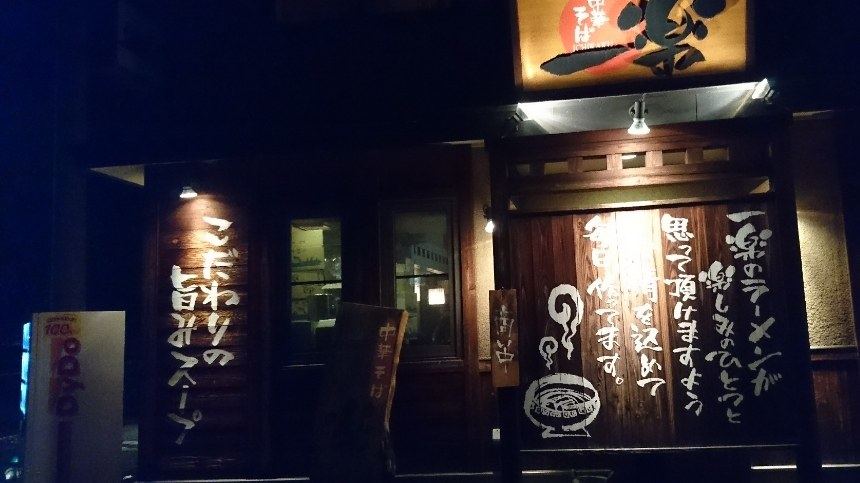
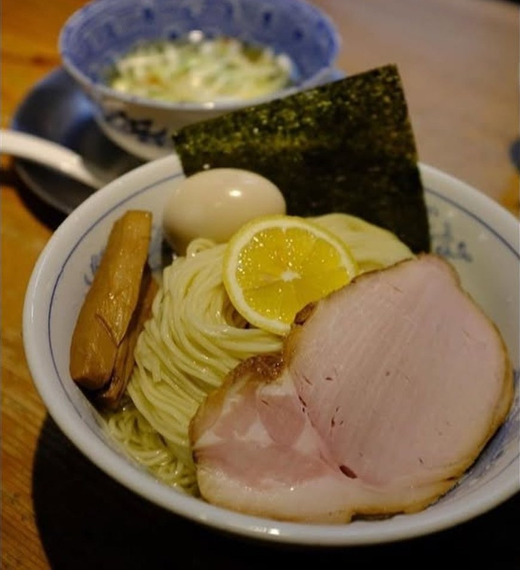
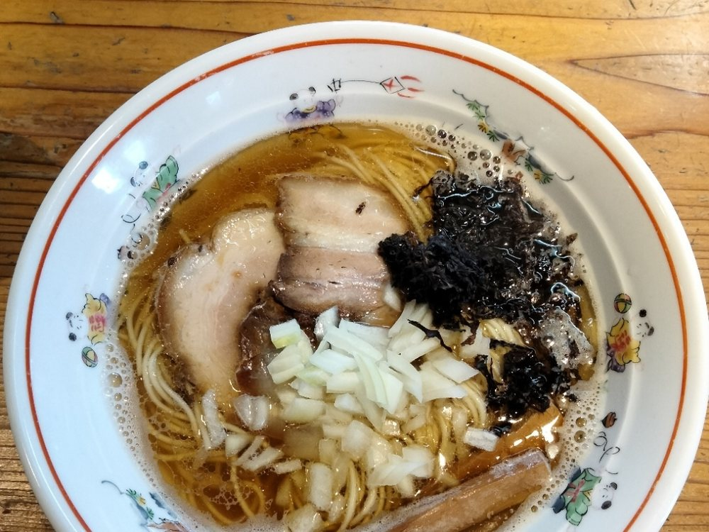
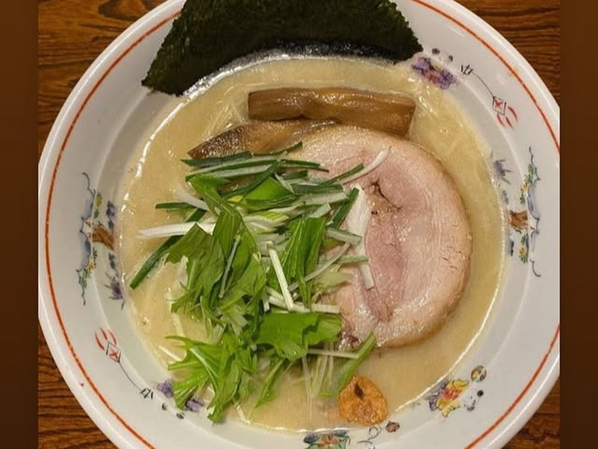
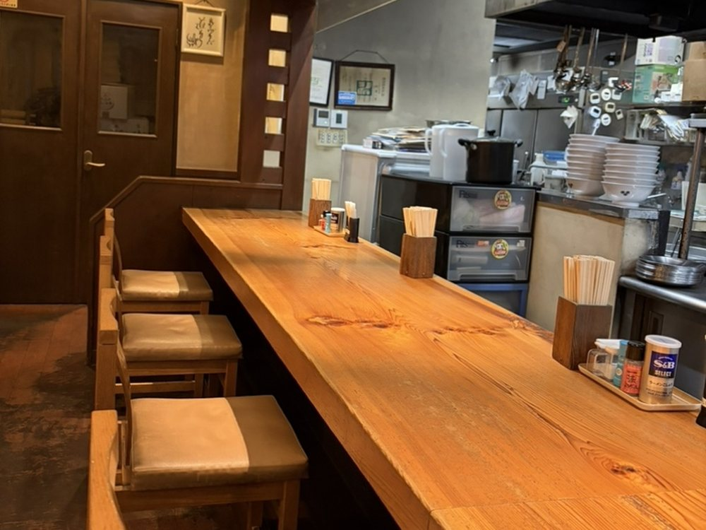
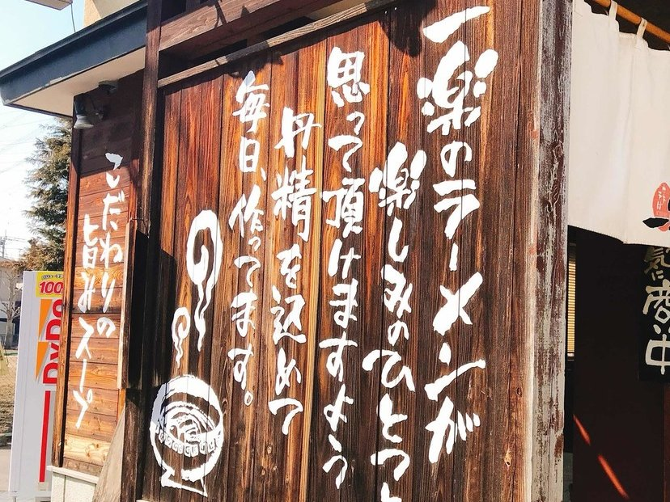
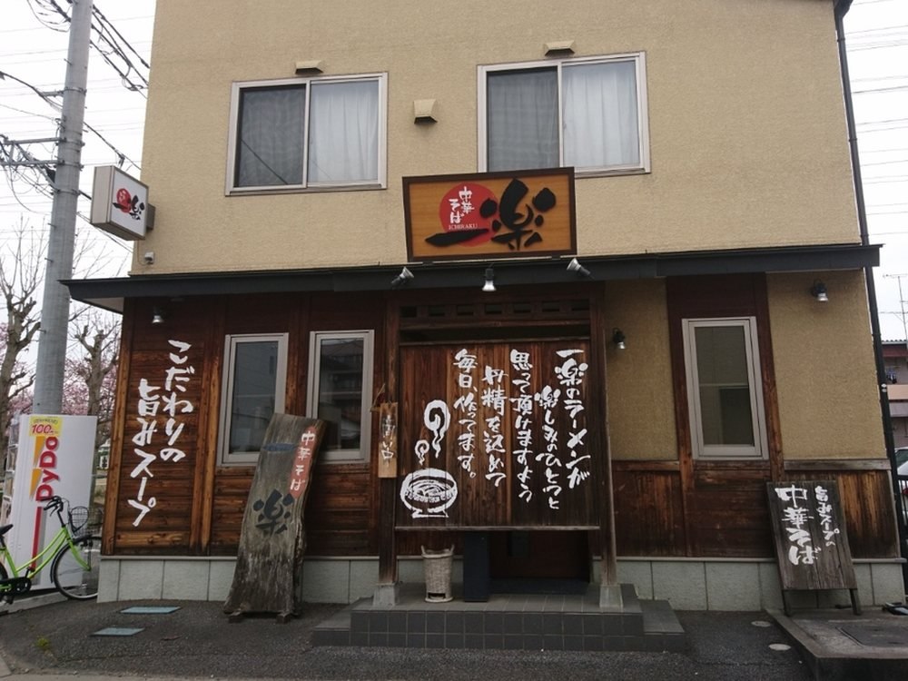

材料がなくなり次第、早くしまうことがございます。
栃木県小山市城東／ラーメン・つけめん
澄んだスープに、自家製の麺。
比内地鶏でひいた清湯と、店で打つ麺。小山市城東の一軒家で、お待ちしております。

署名の一杯

麺を、つけ汁ではなく昆布水に沈めてお出しします。
麺は、店で打つ自家製の麺。つけ汁には、比内地鶏の清湯を使っております。
まずは何もつけず、昆布水をまとった麺だけをお召し上がりください。小麦の甘みと昆布の香りが、そのまま口に残ります。
つけ汁は、塩と醤油からお選びいただけます。
最後は器に残った昆布水をつけ汁に注いで、一滴まで飲み干していただけます。
北海道産の小麦と、オーストラリア産の小麦。二つを合わせて、当店の麺を作っております。
中華そばにも、つけめんにも、昆布水のつけそばにも、同じ自家製の麺をお出しします。
歯切れと、噛んだあとに残る小麦の甘み。この二つを毎日そろえるために、麺は外に任せず、自分の手で打つと決めております。
スープの土台は、比内地鶏です。
あっさりの中華そばは、塩・白醤油・醤油・煮干の四本立て。どれも澄んだ清湯で、丼の底が見えるほどの透明さを保っております。
こってりをお好みの方には、同じ比内地鶏を白く濁るまで炊いた鶏白湯の「鶏塩」をご用意しております。
鶏塩は仕込みの都合で、お休みをいただく日がございます。


どの味も、三段でご用意しております。
まっさらな一杯の「素」。そこに味玉を添えた「味玉」。そして、その日いちばん良いものを全部のせた、いちばん上の段が「一楽」です。
「一楽」には、バラ肉とカタロースのチャーシューをのせております。日によっては、豚軟骨も加わります。
チャーシューは大判に切って、しっかり厚く。味玉、のり、メンマとともに、一杯の顔になります。
中華そばでも、つけめんでも、鶏塩でも、「一楽」までお選びいただけます。
カウンターは、樹皮のついた無垢の一枚板です。
このほかにテーブル席を二卓ご用意しております。お子様連れの方も、どうぞお使いください。
入口の脇の板壁に、当店の気持ちをそのまま書いております。


一楽のラーメンが
楽しみのひとつと
思って頂けますよう
丹精を込めて
毎日、作ってます。
昼は 11:30 から 14:30 まで。夜は 18:00 から 20:00 まで。
月曜日は定休日をいただいております。
平日の夜は、カウンター席のみの営業です。
材料がなくなり次第、早くしまうことがございます。
入口の券売機で、先に食券をお買い求めください。
お支払いは現金のみでございます。カード・電子マネー・QRコード決済はお使いいただけません。
券売機では、一万円札・五千円札・新札の千円札がお使いいただけません。お持ちの方は、お声がけください。
ご予約は承っておりません。お越しいただいた順にご案内いたします。
お昼は混み合う時間帯にお待ちいただくことがございます。
全席禁煙でございます。
「透き通ったスープをひと口飲んで、『あ、美味しい♡』と思える一杯でした。あっさりとしているのに、鶏や野菜の旨味がしっかり感じられます。」
お客様の声より
「人生でラーメンのスープを飲み干したのは、たぶん3回目です。」
お客様の声より
「醤油の香りが立つ、すっきりとしたスープがとても印象的な一杯でした。見た目はあっさりですが、旨みがしっかり感じられ、最後まで飽きずに楽しめます。大きなチャーシューはやわらかく、口の中でほろっとほどける食感です。」
お客様の声より
「トロトロの昆布水に細麺が浸かってます。大判の豚チャーシューがどーん！海苔と極太メンマ、スライスレモンが添えられていて麺量は多いです。」
お客様の声より
「塩ラーメンが食べたくなったら、このお店に来ています。」
お客様の声より
小山駅から歩いてお越しいただけます。
お車の方は、富士通の近く、ココスのある十字路を東へお入りください。駐車場はお店の北側にございます。

| 住所 | 〒323-0807 栃木県小山市城東3-6-30 |
|---|---|
| 電話 | 0285-24-0715 |
| 駐車場 | あり（お店の北側） |
| お支払い | 現金のみ（カード・電子マネー・QRコード決済不可） |
今日の一杯が、楽しみのひとつになりますように。ご来店をお待ちしております。
お電話でのお問い合わせも承ります。ご予約はお受けしておりませんので、どうぞそのままお越しください。